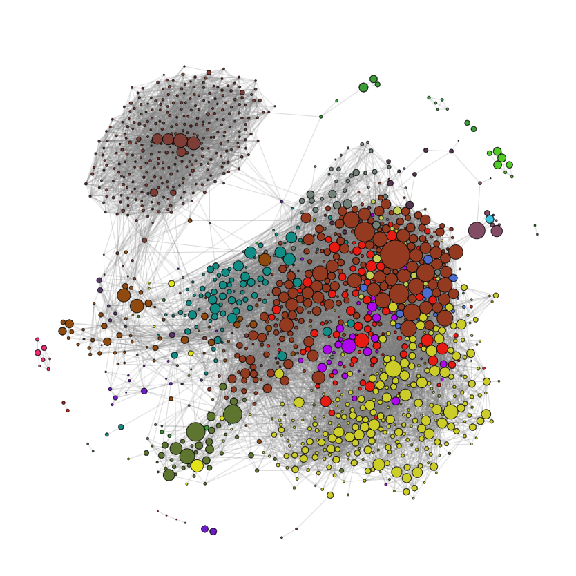
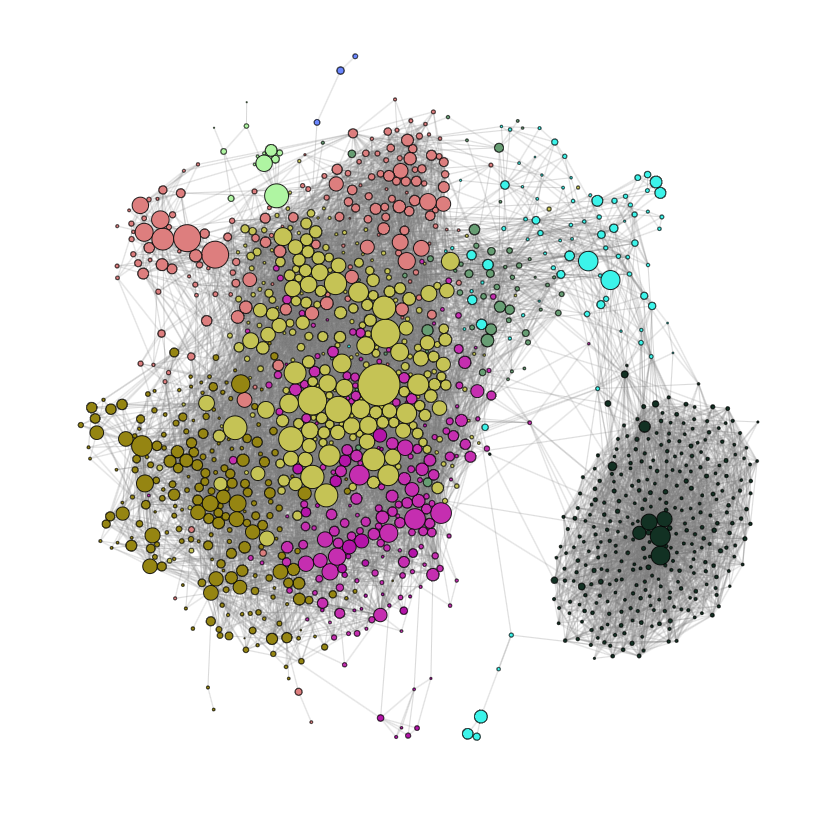
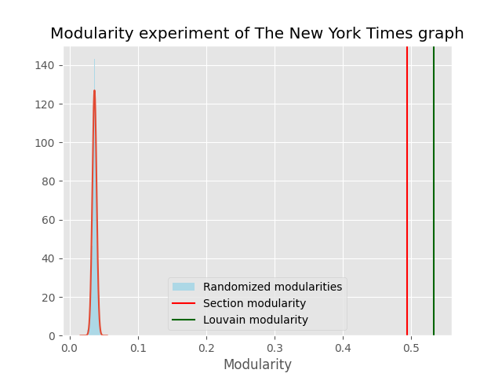

Community detection in news media
To see the see the code for the analysis see the notebook.
What is this project about?
This project analyses how authors collaborate within and across Reuters and The New York Times, the analysis is focused both on the collaborative nature of journalism and how the journalists write.
Data
The data for this project is a subset of All The News 2.0, which is a collection of articles collected from scraping the web with a total of 2,677,878 articles published in the period from January 1, 2016 to April 2, 2020. The dataset contains articles froom several different media organizations with Reuters and NYT being the largest.
This project focused on Reuters and NYT with 840,094 and 252,259 articles respectively.
The dataset has seven features: authors, title, article text, url, section, publication, and the day the article was published. Of the seven features, three are used for this project: authors, article text, and section.
Preprocessing
Since the dataset was collected by scraping the web, it did not come as a surprise that many of the samples are missing features. To filter the unwanted entries the following preprocessing steps were carried out:
- Remove articles not published by Reuters or NYT
- Remove articles missing either authors, section, or article text
- Remove articles in sections that has less than 100 articles
- Remove authors that have written less than 5 articles
- Remove articles with less than 2 authors
The fifth preprocessing step discards a large amount of data since most articles are written by a single author, but was necessary since the goal of this project was to investigate collaboration within news media organizations.
The table below displays statistics of the dataset post preprocessing.
| Reuters | NYT | |
|---|---|---|
| Number of articles | 57,128 | 23,796 |
| Number of sections | 39 | 21 |
| Number of unique authors | 1,951 | 1,318 |
| Average words per article | 622 | 1204 |
| Average articles per author | 29 | 18 |
The two figures below showcase the most common articles for the two organizations


Looking at the distribution of article length for each of the two organizations we observe that NYT articles on average are twice as long as Reuters articles.


Network analysis
For both organizations the networks are constructed based on collaboration. A node in the network represents an author and a connection represents that two authors have collaborated. The nodes are scaled based on the number of articles authored by the given author. The networks are undirected and unweighted as the collaborative connection is assumed to be mutual.
The New York Times

Some nodes (authors) will be discarded as they are not connected to the largest connected component of the graph and as such does not provide any meaningful information regarding the community structure of the network.
For the largest connected component the authors are color coded by their most published section as seen in the network below


Next the Louvain community detection algorithm was run on the largest connected component of the NYT network yielding the following partitioning of the network.

Although there are some differences in the partitioning given by the Louvain algorithm and the authors’ most common section, there are also many similarities.
To test whether the community structure is better than a random partitioning a randomization experiment was carried out by using the double edge swap algorithm. The randomization experiment was repeated 500 times, to quantify the uncertainty of a random partitioning, the community structure of the networks is quantified by computing the modularity of the network.

The modularity of both the partitionings are significantly better than the random partitionings given by the double edge swap algorithm, with the partitioning given by the Louvain algorithm being slightly better. However, this is not surprising as the Louvain algorithm optimizes the modularity of the network.
Reuters
An identical approach was carried out for the data from Reuters

Once again we discard the nodes which are not connected to the largest connected component. Comparing the Reuters network to the NYT network we observe that the Reuters network is much more densely connected.

And the partitioning yielded by the Louvain algorithm

Performing a similar randomization experiment with the Reuters network

Unlike with the NYT network there is a much larger discrepancy between the section partitioning and the partitioning given by Louvain algorithm. However, it is important to note that Reuters many more sections which can overlap due to similarities, as the Louvain algorithm produces 9 communities for NYT (roughly 43% of the sections), and 11 for Reuters (roughly 28% of the sections).
Text analysis
To examine the linguistic differences between the two organizations, word clouds and sentiment analysis was carried out. The word clouds are generated by removing stop words and punctuation and calculating the TF-IDF for articles within a given section. The sentiment analysis was carried out using BERT.
Word clouds
When examining the word clouds produced for the politically inclined sections we see that the American 2016 election has an emphasis in both Reuthers’ Politics section and NYT’s US section.


There are no obvious outliers regarding the language used within the two organizations, it would have been interesting to see how an organization such as Fox News portrayed the 2016 election.
Sentiment analysis
Using BERT to quantify the sentiment for a given article the following distribution of sentiment was obtained
| Reuters | NYT | |
|---|---|---|
| Negative | 47,651 (83%) | 17,376 (73%) |
| Neutral | 5,812 (10%) | 3,384 (14%) |
| Positive | 3,666 (7%) | 3,036 (13%) |
In general news articles and headlines are generally written with negative sentiment because it also attracts clicks as it will often be more exciting.